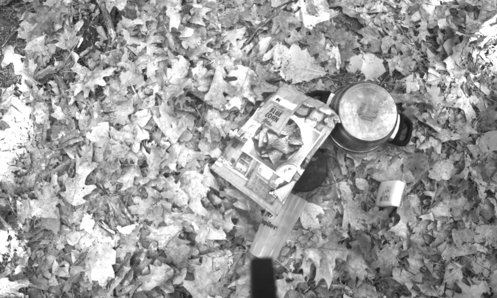
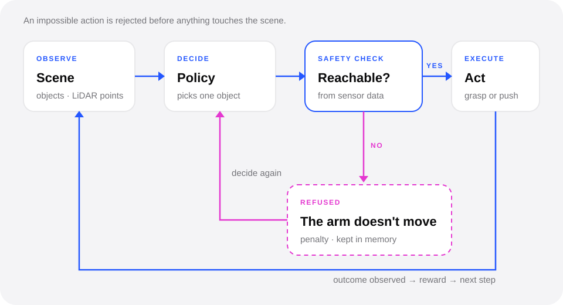
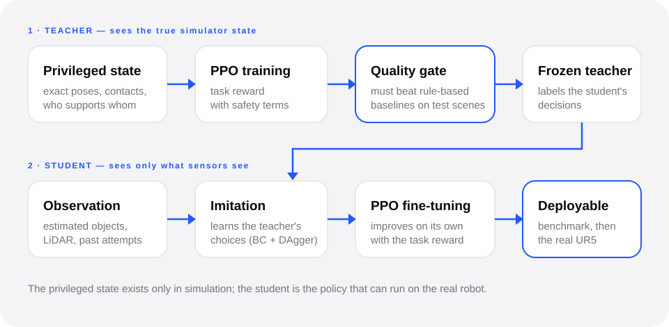

Robot learning
Robotic demining: what to remove, and in what order
A demining robot has to reach a PFM-1 landmine lying among leaves, branches and debris. I'm developing a reinforcement-learning policy that works out what stands in the way of a safe extraction, which objects to remove, how and in what order — first in MuJoCo, then on a real UR5.

- Humanitarian demining: the robot must extract a PFM-1 landmine safely from clutter.
- It has to understand the scene, find what prevents a safe extraction, and decide how many objects to remove, which ones, how and in what order.
- Simulation-first reinforcement learning in MuJoCo, then sim-to-real on a UR5 arm.
- Python
- MuJoCo
- Gymnasium
- Stable-Baselines3 (PPO)
- Reinforcement learning
- Sim-to-real
01
The problem
The target is a small, scatterable plastic anti-personnel mine. Objects around it can rest on it, shield it or block the gripper, and moving the wrong one can push or drop something onto it.
The robot has to understand the scene, identify what prevents a safe extraction, decide how many objects to remove, which ones and how — grasp or push — and in what order, until the mine can be lifted out without being disturbed.
02
Approach
- Observe → decide → execute. The robot perceives the scene, chooses one object at a time, acts, then checks what actually happened before deciding again.
- Simulation first. Randomized cluttered scenes in MuJoCo, built from real-world object classes.
- Teacher–student reinforcement learning. A teacher that sees the true simulator state trains a student that only gets what the sensors see.
- Safety in the objective. The reward penalizes any disturbance of the mine and anything falling near it, and actions the gripper can't physically perform are rejected before execution.

03
Safety before every action
Before the arm moves, the chosen object is checked against what the sensors can see: can the gripper actually reach it, from at least one side, without hitting anything else? If not, the action is refused — the arm doesn't move, the refusal costs a small penalty and is remembered, and the policy decides again.

04
How the policy is trained
In simulation a teacher can see everything — exact poses, contacts, which object supports which. It is trained first, and only if it beats rule-based baselines on held-out scenes does it supervise the student. The student sees only sensor observations: it imitates the teacher, then keeps improving with reinforcement learning. The student is the policy meant for the real robot.

05
Toward the real robot
Next: a simulated UR5 with learned execution, then sim-to-real transfer on the physical arm.
06
Updates
First full benchmark of the learned policies.
Perception and decision design.
Project start.